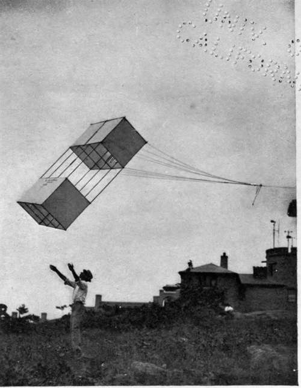

The Perils Of Flying. Part 3
Description
This section is from the book "The New Art Of Flying", by Waldemar Kaempffert. Also available from Amazon: The New Art of Flying.
The Perils Of Flying. Part 3
In the case of a biplane (Fig. 69) the framing of the main wings usually consists of four longitudinals running the whole span of the wings, and these are braced together, both vertically and horizontally, with numerous cross-struts and wire diagonals, so as to give them very great strength, both vertically and horizontally. In fact, if the stresses of the diagonal wires be worked out, they are found to be very much below those usual in ordinary engineering work. Still, the wires are so numerous that, even if one of them breaks from vibration, the extra stress thrown on the adjacent ones will not bring the load up to the ordinary stresses allowed in girder work. The horizontal strength is also practically equal to the vertical, as the trussing is generally of the same character.
In the monoplane the trussing is much simpler. Often there is no horizontal trussing at all. The vertical strength of the main plane is entirely dependent on stays, generally four to each side, which go to the bottom of a strut under the backbone. Should one of these break, the probability is that the wing will collapse with disastrous results. These stays are often single parts of steel wire or ribbon, a material which has not been found sufficiently reliable for use as supports to the masts of small sailing boats, where wire rope is always preferred, on account of the warning it gives before breakage.
Fig. 66. Sending up the first of a pair of tandem kites at the Blue Hill Observatory.
Photograph by George Brayton.
The structure of each wing in a monoplane is, in fact, very much like that of the mast and rigging of a sailing boat, the main spars taking the place of the mast, while the wire stays take that of the shrouds. A very important difference, however, is that the mast of a sailing boat is almost invariably provided with a fore-stay to take the longitudinal pressure when going head to wind, while the wing of an aeroplane, as we have already noted, often has no such provision, the longitudinal pressure due to the air resistance being taken entirely by the spar.
When a monoplane is flitting through the air at the rate of sixty miles an hour, the wire stays often vibrate so fast that they emit a distinct musical note. The small boy who wants to break a piece of wire simply bends it back and forth many times at a given point. Rapid vibration of wires and ribbons on monoplanes will ultimately produce the same result. For safety's sake either wire rope should be used (heavier and therefore undesirable from the record-breaker's standpoint), or the number of stays must be increased so that the parting of one will not necessarily spell a wreck and possibly death.
The horizontal stresses thrown on the single supporting surface of an aeroplane are greater than most pilots realise. In one of those breathless downward swoops which almost bring your heart to your throat, or in one of those quick turns in which the machine seems to stand on end, the stresses are enormously increased. It was the breaking of a wing by overstrain that killed Delagrange at Pau on January 4, 1910; it was overstrain that killed Wachter at Reims on July 1, 1910; it was overstrain, due to sharp turning, that killed Rolls on July 12, 1910, at Bournemouth, England; and it was probably overstrain that weakened the wings of Chavez's monoplane in its battle with the Alpine winds and resulted in the fatal accident that occasioned the intrepid Peruvian's death on September 27, 1910.
In commenting upon the lack of horizontal strength in monoplanes, a writer in Engineering observes.;
" It is, no doubt, assumed that the weight of the machine rests on the wings, and that this is the main stress to be provided for. This is no doubt true, but a careful consideration of the horizontal stresses will show that these are much greater than might at first sight appear. When flying horizontally the horizontal stress cannot, of course, exceed the thrust of the propeller, and must in practice be considerably less than this, as part of that thrust is spent in overcoming the resistance of the body of the machine, the tail, etc. The ratio of lifting power to horizontal stress will vary considerably in different machines with the efficiency of the planes, but even with the machine flying horizontally the horizontal stress will probably be in the neighbourhood of ten per cent of the vertical.
" It appears, however, that there are circumstances in which the horizontal stress may be very much greater than this, for it increases with the speed of the aeroplane through the air, and this may be very much greater when descending than when flying level. The wings contribute the greater part of the air resistance, and therefore, if the aeroplane is descending, it will accelerate till the horizontal stress on the wings balances the acceleration due to gravity. Thus, if the aeroplane descends at a slope of one in five, the horizontal pressure on the planes may be approximately twenty per cent of the weight of the machine. If the engine is kept running, it will be more than this by the amount of the propeller thrust. It is quite clear, therefore, that circumstances might arise in which the horizontal stress would be some twenty-five per cent of the vertical.
" Now, if we examine the framework of many of the monoplanes, we find that the horizontal strength of the wings is nothing like twenty-five per cent of the vertical; in fact, it is often probably under five per cent. The framework of the wing consists of two longitudinals, and numerous cross-battens carrying the fabric. The longitudinals are the only part fixed to the backbone, and therefore take practically the whole stress. These longitudinals are generally made very deep in proportion to their height, and are often channelled on the sides to make them into I-section girders. It is obvious, therefore, that their horizontal strength is very small indeed compared with the vertical. True, the numerous cross-battens stiffen the wing perceptibly, but the extent to which this is the case can hardly be calculated; and as they are often only about 3/4 inch by 1/4 inch, and fastened with very small nails, they cannot be relied on to any great extent. It seems, therefore, that either the wings should have diagonal bracing or should have stays in front corresponding to those down below".
Continue to: